1 . fejezet Út az ökonometriához
\[ \DeclareMathOperator*{\argmin}{arg\,min} \DeclareMathOperator*{\argmax}{arg\,max} \DeclareMathOperator*{\rank}{rank} \]
Egy ilyen tudomány esetén az első feladat annak tisztázása, hogy egyáltalán mi az az ökonometria, mire szolgál, és mi szükség van rá a társadalmi-gazdasági jelenségek elemzése során. A kérdést két történetszálon fogjuk végigvezetni (persze mint minden valamirevaló kortás norvég regényben, a szálak végül össze fognak érni).
1.1 Történetünk első szála: néhány motiváló példa
Elsőként, ahelyett, hogy rögtön a definíciókra térnénk, talán érdemesebb pár példát átbeszélni, melyek már mutatni fogják az ökonometriai vizsgálatok fő problémáit.
1.1.1 Hogyan hat az osztálylétszám a tanulók teljesítményére?
Kalifornia, 1999: 420 iskolai körzet adatait gyűjtik be
A jobb tanár:diák arányú (kisebb létszámú) osztályokban jobb a teljesítmény
A közoktatásokkal kapcsolatos vizsgálatok egyik klasszikus kérdése, hogy az osztálylétszám hogyan hat a tanulók teljesítményére. Sokan amellett érvelnek, hogy a kisebb létszámú osztályokban több tanári figyelem jut egy diákra, így a tanulók teljesítménye jobb lesz. De vajon tényleg így van?
E kérdésre számos módon válaszolhatunk: felállíthatunk elméleti modelleket, papíron és ceruzával, készíthetünk interjúkat szakértőkkel, vizsgálhatunk analóg helyzeteket más területekről stb.
Mi azonban a továbbiakban egy módszerrel fogunk foglalkozni: ha empirikusan igyekszünk válaszolni a kérdésre. Empirikusan, annyi mint a tapasztalatok alapján, tehát való életbeli tényadatok begyűjtévél. Elvégre az osztálylétszámokra csak van valamilyen adatgyűjtés, ha az országban futnak standardizált képességmérő felmérő-programok, akkor a tanulók teljesítményére is van adatunk – mi lenne, ha
1999-ben Kalifornia állam pontosan ezzel a kérdéssel szembesült. 420 iskolai körzetből gyűjtött adatokat, melyek – számos egyéb mellett – tartalmazták a tanulók és tanárok létszámát, valamint az elért teszteredményeket1. Az AER csomag CASchools néven tartalmazza a tényleges adatokat. Lássuk is akkor az eredményt! Íme a tanár:diák arányok és a teszteredmények szóródási diagramok szemléltetve:
data("CASchools", package = "AER")
CASchools$tsratio <- with(CASchools, teachers/students)
CASchools$score <- with(CASchools, (math + read)/2)
lattice::xyplot( score ~ tsratio, data = CASchools,
xlab = "Tanár:diák arány", ylab = "Teszteredmény" )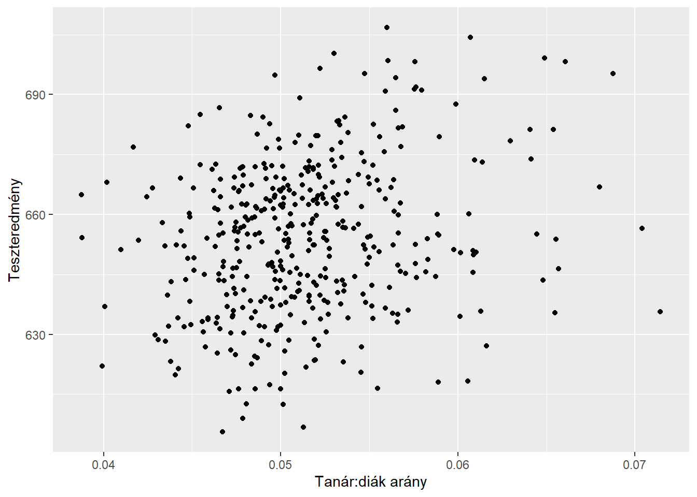
Az eredmények első ránézésre megerősítik a sejtésünket: ha több tanár jut egy diákra (kisebbek az osztályok), akkor az jobb teszteredménnyel jár együtt. Nem túl erős az összefüggés, de azért egyértelműen létezik (vájtfülőek kedvéért: \(r=0.23\), \(p <0.001\)) és némi munkával még az is kihozható, hogy ezen eredmények szerint ha egy századdal megnöveljük a tanár:diák arányt, akkor várhatóan 8.38 ponttal fog javulni a tesztpontszám.
Ezek az eredmények húsbavágóak. Ha lecsökkentjük az osztálylétszámokat, akkor több tanárt kell alkalmazni, több osztályt kell indítani, adott esetben több osztályteremre lesz szükség, de még az sem kizárt, hogy új iskolaépületre. Pontosan tudni kell tehát, hogy tényleg elérünk-e ezzel valamit. Sőt, valójában ennél többről van szó, azt is tudni kell, hogy mennyit érünk el ezzel, egész egyszerűen azért, hogy költség-haszon mérleget lehessen csinálni: a tanárok bérét meg az iskolafelújítások árát megmondják a kontrollerek, de mit rakunk a mérleg másik serpenyőjébe? Ehhez kell tudni a fenti számot, hogy a kettőből együtt meg tudjuk mondani: hány millió dollárt kell költenünk 1 pont teljesítményjavításra. Hogy aztán ez megéri-e, az természetesen már nem statisztikai kérdés, függ a rendelkezésre álló büdzsétől, az egyéb feladatoktól, de még a kormány értékválasztásától is, ám a statisztikának kell ezt, mint inputadatot szolgáltatni a döntéshez.
De vajon biztos jól van így minden? Ha az ember elkezdi jobban nézni a problémát, esetleg szociológiai
szemmel is igyekszik ránézni, akkor hamar szöget üthet a fejében valami. És nem is kell Kaliforniáig menni, magyar, vagy akár még konkrétabban budapesti viszonylatban is ugyanúgy érzékelhető a probléma: ha veszünk kis átlaglétszámú osztályokat (sztereotipikusan mondjuk 2. kerület) és nagy átlaglétszámú osztályokat (sztereotipikusan mondjuk 8. kerület), akkor hihető, hogy az előbbiek teljesítménye jobb, na de álljunk meg egy pillanatra! Csak és kizárólag az osztálylétszám nagyságában térnek el ezek az osztályok egymástól?! Dehogy! Akkor meg honnan tudjuk, hogy a tapasztalt különbség tényleg az osztálylétszámbeli eltérés miatt van…?
A rövid válasz – sajnos – az, hogy sehonnan! És itt van a bökkenő: igaz, hogy a 2. kerületi osztályok kisebbek mint a 8. kerületiek, de egyúttal másban is eltérnek, az oda járó gyerekek szocioökonómiai háttere tendenciájában jobb, tanulásra motiválóbb otthoni környezetből érkeztek, a szülők anyagilag is megengedhetik maguknak, hogy a gyermekeiket különórára járassák stb. E ponton viszont nagy baj van: innen kezdve fogalmunk sem lehet, hogy a tapasztalt különbség tényleg a kisebb osztálylétszám miatt van, vagy esetleg az osztálylétszámnak a világon semmi hatása nincs, csak egyszerűen a kisebb osztályokba jobb szocioökonómiai helyzetű diákok járnak és ez a valódi oka az ott tapasztalt jobb tesztpontszámnak?
Sőt! Innentől kezdve még akár az is elképzelhető, hogy a kisebb osztálylétszám igazából kifejezetten ront a teljesítményen önmagában, csak épp a kisebb osztályokba annyival jobb szociális helyzetű diákok járnak, hogy az átfordítja a helyzetet.
Valaki nem hiszi el, hogy ez még is lehetséges? Nos, gyártsunk egy egyszerű szimulációt! Egyelőre nem árulom el, hogy hogyan készítettem, de íme a végeredménye:
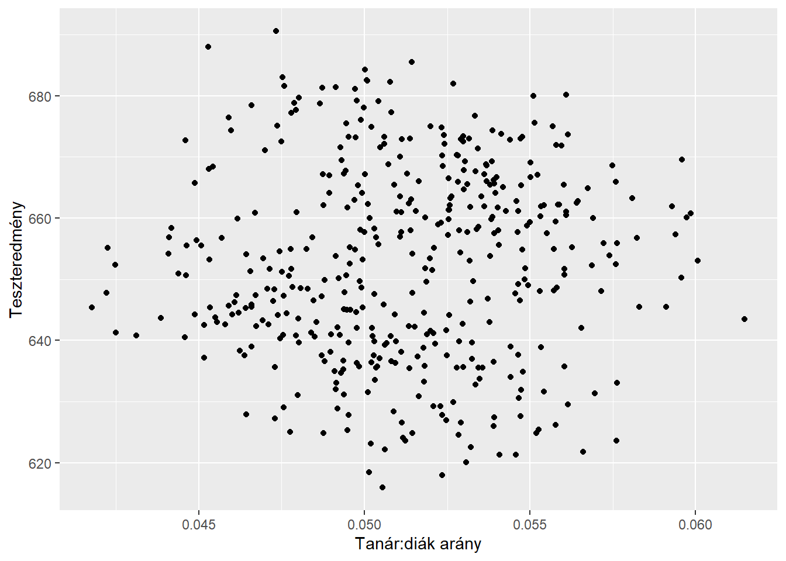
Első ránézésre nagyjából megfelel a korábbi képnek. De nézzük csak meg jobban mi történik itt! (Mivel ezt saját kezűleg generáltuk, így megtehetjük, hiszen tudjuk mi van a valóságban, az adatok hátterében). Az egyszerűség kedvéért mondjuk, hogy a szocioökonómiai státusz egy bináris változó, jó
és rossz
a két lehetséges értéke.
Nézzük a tanár:diák arány és a pontszám összefüggését a jó szocioökonómiai státuszú osztályok körében:
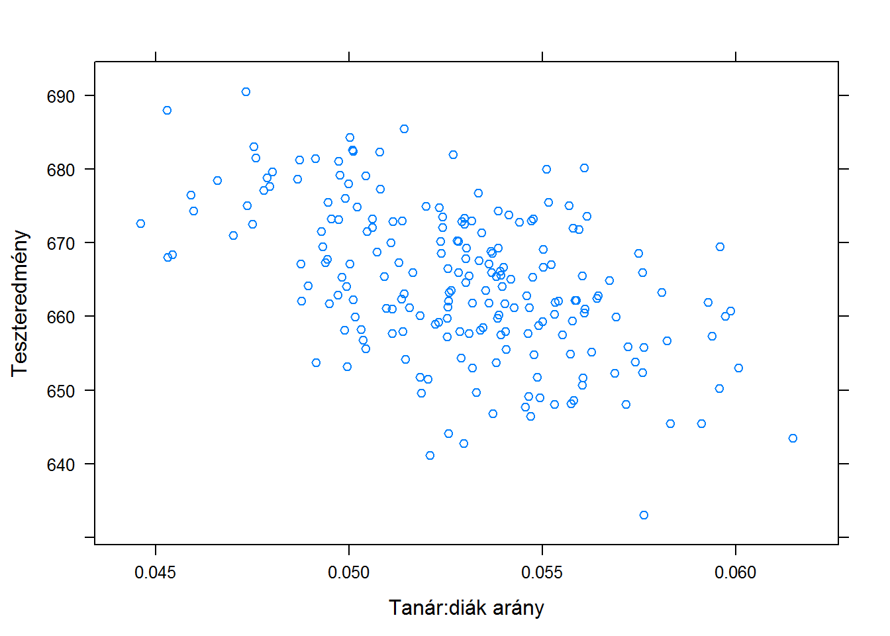
Érdekes! Itt fordított a kapcsolat. Na de mi a helyzet a rossz szocioökonómiai státuszú osztályokban? Íme:
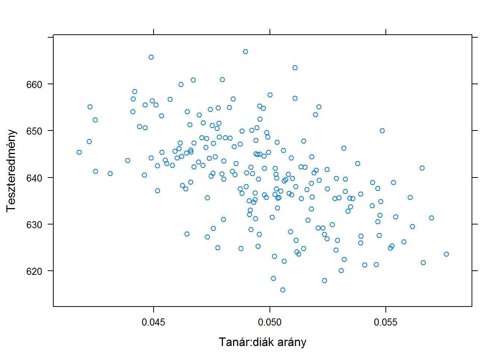
Itt is negatív a kapcsolat!
Ez meg hogy a viharban lehet? – kérdezhetné valaki. A rossz szociális helyzetű csoporton belül is ront a kisebb osztálylétszám, a jó helyzetűeken belül is ront, de összességében meg javít?! Egyből világosabb a helyzet, ha egy ábrán ábrázoljuk a kettőt, csak eltérő színekkel:
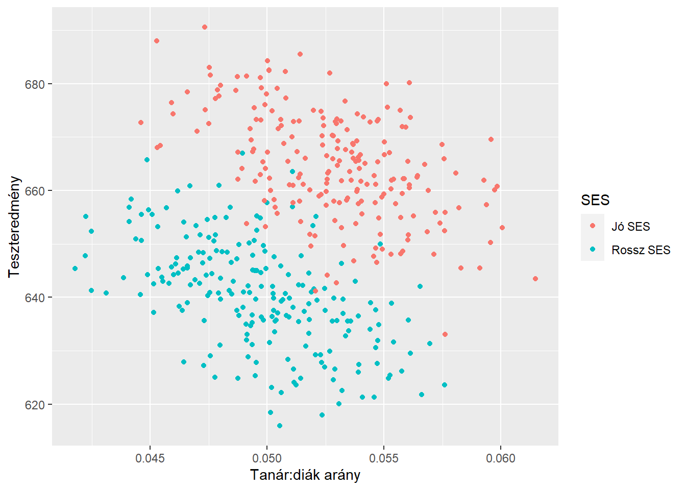
Azonnal érthető, hogy mi történik, ha hozzávesszük a korábban mondottakat: a jobb tanár:diák arány igazából ront a helyzeten, de a jobb szociális helyzetű diákok által alkotott osztályok egyszerre kisebbek és – szociális helyzetük, nem az osztálylétszám miatt! – jobb teljesítményűek, és ez olyan erős effektus, hogy ha egyben vizsgáljuk az osztályokat, akkor a kisebb létszám rontó hatását átbillenti, hogy a kisebb osztályok a jobb szociális helyzetük miatt jobb teljesítményűek. Így összeségében azt fogjuk látni, ahonnan indultunk: hogy a kisebb létszámú osztályok jobb teljesítményűek.
A végeredmény tehát: a kisebb osztálylétszám rontja a teljesítményt és a kisebb létszámú osztályok jobb teljesítményűek. És ha valaki érti a fentieket, akkor azt is érti, hogy ebben a mondatban miért nincs semmi ellentmondás!
1.1.2 Csökkenti-e a korrupció mértékét a nők részvétele a politikában?
TODO
1.1.3 Csalnak-e az orosz választásokon?
TODO
1.1.4 További példák
Hosszasan sorolhatóak a további, hasonló példák a társadalmi-gazdasági elemzések világából. Kommentár nélkül még néhány kérdés, érdemes mindegyiket a fenti példákból leszűrődni kezdődő tanulságok szemüvegén keresztül végiggondolni:
- Hogyan hat a munkanélküliség a GDP-re?
- Hogyan hat az államadósság a növekedésre?
- Return on education: mekkora az oktatás haszna, tehát, ha egy évvel többet tölt valaki az iskolapadban, az mennyivel növeli a fizetését?
- Létezik-e
cigánybűnözés
? - Az ökonometria-előadás haszna: ha többet tölt a hallgató az öko előadáson, jobb jegyet kap-e emiatt, és ha igen, mennyivel?
- Milyen tényezők hatnak arra, hogy egy országban hány terrortámadás történik?
- Hogyan hat a rendőri erők létszáma egy adott városban az ottani bűnözési rátákra?
- Cégeknek adott továbbképzési támogatás hogyan hat a termelékenységre?
(Igen, ezekre mind válaszolhatunk ökonometriai módszerekkel!)
1.2 A példák tanulságai: az empirikus adatok elemzésének legnagyobb problémája
Valamilyen ok-okozati hatásra vagyunk kíváncsiak; a kauzalitás érdekel minket
Számos vizsgálati módszer közül most az empirikus adatok elemzésével fogunk foglalkozni: tényadatokat gyűjtünk be, és ebből igyekszünk következtetni
A mintázat most már látszik. Valamilyen tényező hatására vagyunk kíváncsiak, az okozati hatására, szép szóval: a kauzalitásra, ez mindegyik példa lelke.
Úgy döntünk, hogy a kérdést empirikus adatok elemzésével igyekszünk megoldani, azaz való életbeli tényadatokat gyűjtünk be. (A vizsgált tényezőről, a hatásról, esetleg egyéb fontos változókról.)
Azért, hogy eldöntsük, hogy van-e okozati hatás (illetve, hogy lemérjük mekkora), csoportokat hasonlítunk össze, melyek eltérnek a vizsgált tényezőben. Csak épp közben a vizsgált tényezőbeli eltéréssel automatikusan együtt járnak egyéb tényezőbeli eltérések, és innentől kezdve bajban vagyunk, mert ha találunk is különbséget a csoportok között, nem fogjuk tudni, hogy az mi miatt van: a vizsgált tényezőbeli eltérés miatt, a vele együtt járó egyéb eltérések miatt, vagy esetleg ezek valamilyen keveréke miatt. Ezt a jelenséget, mely az empirikus adatok elemzésének legnagyobb problémája, hívják confoundingnak. (Angolul nagyon jó szó, amire nem sikerült hasonlóan találó magyar fordítást bevezetni. A confounding azt jelenti, hogy összemosódás, és csakugyan, az a probléma, hogy a vizsgált tényezőbeli eltérés összemosódik egyéb tényezőkbeli eltérésekkel.)
Vegyük észre, hogy a confounding fellépéséhez az kellett, hogy létezzen olyan tényező, amire két dolog egyszerre igaz: együttmozog a vizsgált tényezővel (összefügg vele) és önmagában – azaz a vizsgált tényező minden értéke mellett – hat az eredményváltozóra. Akkor van confounding, ha ez a kettő egyidejűleg fennáll. Ha bármelyik nincs jelen, akkor nincs probléma. Ha a szociális helyzet összefügg ugyan az osztálylétszámmal, de nem hat a teljesítményre, akkor nincs baj: igaz, hogy a kisebb osztályok jobb szociális helyzetűek, de ez nem befolyásolja a teljesítményt. Hasonlóképp, ha a szociális helyzet befolyásolja ugyan a teljesítményt, de nem függ ösze az osztálymérettel, akkor sincs gond: a kisebb osztályoknak nem tér el a szociális helyzete a nagyobbaktól. (Gondoljuk végig az összes többi példára is!) Azokat a változókat, amelyek ezt a két dolgot egyidejűleg tudják, tehát a vizsgált tényezővel együttmozognak és az eredményváltozóra is hatnak, ilyen módon okozzák a confoundingot, szokás zavaró változónak, vagy confoundernek nevezni.
A későbbiek szempontjából hasznos lesz ezt még másképp átfogalmazni. A probléma, hogy nem az érdekel minket, hogy egy osztály abban tér el, hogy kisebb a létszám, akkor ott jobb-e a teljesítmény, hanem az, hogy ha csak abban tér el, hogy kisebb a létszám, akkor ott jobb-e a teljesítmény. Ezt szokás ceteris paribus elvnek (minden mást változatlanul tartva
) nevezni, ez a kulcs a kauzalitáshoz: az érdekel minket, hogy ha minden mást változatlanul tartva csak az osztálylétszám változik, akkor mi történik. A naiv elemzésben az osztálylétszám változásával együtt egyéb tényezők is változhatnak, így ebből nem tudunk a kauzalitásra következtetni. Figyeljünk a szóhasználatra: azt mondhatjuk, hogy a kisebb osztálylétszám jobb teljesítménnyel jár együtt (korreláció), de azt nem, hogy a kisebb osztálylétszám jobb teljesítményt okoz (kauzalitás).
Valaki esetleg azt mondhatja, hogy rendben, itt tényleg van valami módszertani gubanc, meg szép latin szavak2 de igazából ez csak az ilyen módszertani kérdéseken szöszmötölő kutatóknak érdekes, a lényeg, hogy ha kisebb az osztálylétszám, akkor ott jobb a teljesítmény, ennyi a fontos, és pont. Nem! Ez az érvelés teljesen fals, az hogy mi hat mire, nem tudományos szőrszálhasogatás, hanem elsőrendű gyakorlati kérdés. Miért? A beavatkozás miatt! A valódi okozatiság felismerése ott válik kritikussá, ha beavatkozunk a rendszerbe, ha ugyanis rosszul állapítjuk meg az okozati kapcsolatok irányát, akkor ez teljesen félremehet. Például lecsökkentjük az osztálylétszámokat, adott esetben rengeteg pénzt elköltve, de ha a valódi oka a jobb teljesítménynek nem az osztálylétszám, hanem a jobb szociális helyzet, akkor ezzel semmit nem érünk el! Sőt, mint a későbbi példa mutatja, adott esetben még kimondottan árthatunk is!
Végezetül még egy megjegyzés. A confounding felismerése nem azt jelenti, hogy akkor igazából nincs hatás, végképp nem azt, hogy bizonyítottuk, hogy ellentétes irányú hatás van. Pusztán annyit jelent, hogy a confounding-gal terhelt adatok nagyon gyenge bizonyítékot jelentenek a hatás léte mellett. De ettől még lehet éppenséggel hatás! – csak az ilyen adatok nagyon kevéssé támasztják ezt alá.
1.3 A confounding megoldásai: kísérlet és megfigyelés
Most, hogy alaposan kiveséztük a confounding problémáját, természetesen adódik a kérdés: na de mit tehetünk ez ellen? Azt könnyű lenne biztosítani, hogy a csoportok egy-két általunk megadott szempont szerint ne legyenek eltérőek, de azt, hogy egyáltalán semmilyen szempont szerint ne térjenek el (kivéve persze az vizsgált tényezőt), olyanok szerint sem, amikről eszünkbe sem jut, hogy lehet bennük eltérés, csak egy módon lehet: ez a randomizálás. Ahogy a szó is sugallja, a randomizálás lényege, hogy a megfigyelési egységeket véletlenszerűen sorsoljuk különböző csoportokba, majd ezeket a csoportokat tesszük ki a vizsgált tényezőnek. Például pénzfeldobással döntjük el az óvoda végén minden egyes gyermekről, hogy kis vagy nagy létszámú osztályba kerüljön. Ez azért jó, mert ilyen módon a két csoport között nem lesz szisztematikus különbség szocioökonómiai státuszban, de ami még fontosabb: semmilyen tényezőben nem lesz szisztematikus különbség, a kék szeműek vagy a balkezesek számában sem, hiszen a pénzfeldobás nyilván ezekre is érzéketlen. Ilyen módon a csoportok összehasonlíthatóak: ha találunk köztük különbséget a tanulmányi eredményben, az tényleg az osztálylétszámnak lesz betudható… hiszen másban nincs szisztematikus különbség.
A randomizálásnak egy baja van: akkor alkalmazható, ha a vizsgált tényezőt tudjuk irányítani. (Hiszen nekünk kell az egyik csoportba sorsolt gyerekeket kis, a másikat nagy létszámú osztályba helyezni.) Azokat a kutatásokat, ahol a kutatást végzők tudják irányítani a vizsgált tényezőt, kísérletes (experimentális) kutatásnak nevezzük. És itt értünk el a bökkenőhöz: a társadalmi-gazdasági jelenségek vizsgálata az a terület, ahol tipikusan nem lehet kísérletet végezni. Aligha lehet gyerekeket pénzfeldobással sorsolni osztályokba, vagy országokban pénzfeldobással meghatározni, hogy mennyi nő üljön a kormányban…
(Persze ez sincs kőbe vésve. Néha lehet kísérletet csinálni, ahogy a választási megfigyelők példája is mutatja. Másik oldalról, például az orvostudományban sokszor lehet kísérletet csinálni, ez a jellemző új gyógyszerek bevezetésénél, ahol a vizsgálat során véletlenszerűen kiválasztott alanyok kapnak gyógyszert, míg a többiek placebot, de ott is van olyan kérdés, ahol nem lehet kísérletet csinálni! Tipikusan ilyenek fordulnak elő az epidemiológiában: a vörös hús rákkeltő? Aligha lehet emberekkel pénzfeldobás alapján évtizedekig több vagy kevesebb vörös húst etetni… Innentől a probléma ott is ugyanaz: ha a vörös húst evők között több a rákos, az nagyon gyenge bizonyíték, mert a több vörös húst fogyasztó emberek milliónyi egyéb dologban is eltérnek a kevesebb vörös húst fogyasztó emberektől a vörös hús fogyasztás mértékén túl – és mi van, ha ezek közül valami növeli a rákkockázatot…?)
Azokat a vizsgálatokat, ahol a kutatást végzők nem tudják befolyásolni a vizsgált tényezőt, az alakul a maga rendje szerint, és a kutatók csak passzíve feljegyzik a történéseket külső szemlélőként, megfigyeléses (obszervációs) vizsgálatnak nevezzük. A társadalmi-gazdasági elemzések során tehát szinte mindig ilyenekkel lesz dolgunk. Márpedig ezeknél mindig fejünk felett fog lebegni a confounding problémája.
1.4 Történetünk második szála: az ökonometriai modellek és a regresszió
Folytassuk most valami – látszólag – teljesen más témával.
Minden fenti példában volt egy változó, mely az eredménye volt a vizsgálatunknak, a kimenet szerepét játszotta, tehát aminek az alakulását le kívántuk írni (tesztpontszám, korrupció mértéke, szavazati arány stb.). A továbbiakban ezt eredményváltozónak (vagy függő változónak, angolul response) fogjuk hívni, jele \(Y\). Az első példánkban \(Y=\text{Teszteredmény}\). Másrészről voltak változók, adott esetben nem is egy, amikkel le akarjuk írni az eredményváltozó alakulását, amelyekről azt mondjuk, hogy hatnak, vagy hathatnak az eredményváltozóra; ezek neve magyarázó változó (vagy független változó, angolul predictor). Ezekből több is lehet (az első példában ilyen az osztálylétszám és a szocioökonómiai helyzet), jelöljük számukat \(k\)-val, és az egyes változókat \(X_i\)-vel (\(i=1,2,\ldots,k\)). Az első példában \(k=2\) és \(X_1=\text{Tanár:diák arány}\), \(X_2=\text{Szocioökonómiai státusz}\). Összefoglalva, az eredményváltozó a vizsgált kimenet, a magyarázó változók az azt – potenciálisan – befolyásoló tényezők (tehát a fontos, vizsgált változók és a – potenciális – confounderek egyaránt).
Az \(X\)-ek hatnak az \(Y\)-ra, vagy fordítva megfogalmazva, az \(Y\) függ az \(X\)-ektől – ragadjuk meg most ezt matematikailag. Szerencsére arra, hogy egy változó függ más változóktól, ismerünk egy jó matematikai objektumot, ez a függvény fogalma: \[ Y=f\left(X_1,X_2,\ldots,X_k\right) \] A későbbiekben erre azt fogjuk mondani, hogy ez egy statisztikai modell. Ennek az általánosságával nehéz lenne vitatkozni, de egy baja mégis csak van.
A fő probléma, hogy a modell azt feltételezi, hogy az \(Y\) és az \(X\)-ek kapcsolata determinisztikus. Szinte teljesen mindegy is, hogy mi az \(Y\) és mik az \(X\)-ek, hogy mi a vizsgált probléma, a társadalmi-gazdasági jelenségek vizsgálata kapcsán lényegében általánosan kijelenthető, hogy ez irreális: bármilyen ügyesek vagyunk, soha az életben nem fogunk tudni determinisztikus modelleket alkotni társadalmi-gazdasági jelenségekre. (Aligha lehet olyan modellt alkotni, ami pontosan, hiba nélkül megmondja előre, hogy egy osztály milyen pontszámot fog elérni, vagy, hogy egy választáson pontosan hány szavazat érkezik egy pártra.) Ez legfeljebb középiskolás fizikában működik, a társadalmi-gazdasági jelenségekben szinte kizárt, hogy függvényszerű módon meghatározzák a magyarázó változók az eredményváltozót. Hiszen lesznek változók amiket nem ismerünk, rosszul mérünk, rosszul veszünk figyelembe, az, hogy egy gyerek hány pontot ír egy teszten, mindig függ a mi közelítési szintünk ténylegesen véletlen dolgoktól stb. A A valódi modell tehát sztochasztikus kell legyen: \[ Y=f\left(X_1,X_2,\ldots,X_k\right)+\varepsilon \] Itt \(\varepsilon\) jelzi a fentiekből fakadó bizonytalanságot, a neve: hibatag.
Rövid jelölésként az \(X\)-eket gyakran egy vektorba vonjuk össze: \(Y=f\left(\underline{X}\right)+\varepsilon\).
Az így kapott modellünk már egy teljes értékű statisztikai (ökonometriai) modell! Az ilyen \(f\)-et hívjuk (sokasági) regressziófüggvénynek.
Később még többet fogunk vele foglalkozni, de már most is fontos, hogy lássuk, hogy az \(f\)-nek van egy nagyon is földhözragadt értelmezése: szeretném megtippelni \(Y\) értékét \(X\)-ek ismeretében. Hogy ez miért lesz fontos, azt majd később fogjuk látni, de a feladat így is értelmes: ha ismerem egy osztály tanár:diák arányát és a szociális helyzetet, akkor ezek alapján
Ez az egyenlet egy sokasági modell: azt írja le, hogy a valóság hogyan működik. Pontosan ugyanaz a helyzet, mint bármilyen következtető statisztikai kurzus alapjainál: van a sokaság, amit eloszlásokkal, valószínűségszámítási eszközökkel írunk le, de a tényleges vizsgálatokban mi sem ismerjük. (Tehát nem tudjuk, hogy ezek az eloszlások milyenek.) Ahhoz, hogy megismerjük veszünk egy mintát, ennek a kezeléséhez már statisztika kell, aminek a feladat épp az lesz, hogy következtessünk a sokaságra.
Most is hasonló a helyzet: mi sem tudhatjuk, hogy milyen eloszlása van a teszteredményeknek, csak van egy 420 elemű mintánk rá nézve; és hasonlóan a többi változóval. Most azonban egy pillanatig leszünk valszámos emberek: ne törődjünk azzal a problémával, hogy a sokaságot igazából nem ismerhetjük, játsszuk azt, hogy ismerjük (tudjuk mik ezek az eloszlások), és vizsgáljuk meg, hogy ebből mire jutunk! Ugyanúgy mint a következtető statisztikánál, ez nagyon hasznos lesz majd később, a számunkra igazán érdekes – statisztikai – feladat megoldásánál is.
A nem-kísérleti jelleg miatt az az értelmes modell, ha mind az eredményváltozót, mind a magyarázó változókat – és így persze \(\varepsilon\)-t is – valószínűségi változónak vesszük. (Ezért használtam eddig is nagy betűket!) Bizonyos egyszerűsített tárgyalások úgy tekintik, mintha az \(X\)-ek nem valószínűségi változók lennének, hanem rögzített értékek. Ez a kísérletek világában rendben lehet, ahol mi be tudjuk állítani az \(X\)-ek értékét, de ökonometriában, a társadalmi-gazdasági elemzések világában még közelítő feltevésként is értelmetlen.
1.5 Regresszió a sokaságban
Elsőként tehát le kell írnunk a sokaságot: valszámos emberek leszünk, és úgy vesszük mintha ismernénk a sokaságot. Mit jelent ez, mit is ismerünk pontosan? Nem csak \(Y\) és \(X_1,X_2,\ldots,X_k\) eloszlásait (külön-külön), hanem az együttes eloszlásukat is! Ekkor tudunk mindent ezekről (valószínűségszámítási értelemben).
Ezt úgy kell elképzelnünk, mint egy \(k+1\) dimenziós teret: minden pont egy adott magyarázó- és eredményváltozó-kombináció. E fölött értelmezve van egy eloszlás, ami azt mutatja, hogy ha mintát veszünk ebből az eloszlásból, akkor milyen valószínűséggel esünk az adott pont kis környékére.
\(k+1\) dimenziós terekben a legtöbb ember relatíve rosszul tájékozódik, úgyhogy ábrázoljunk egy olyan együttes eloszlást, amikor még átlátható a dolog!
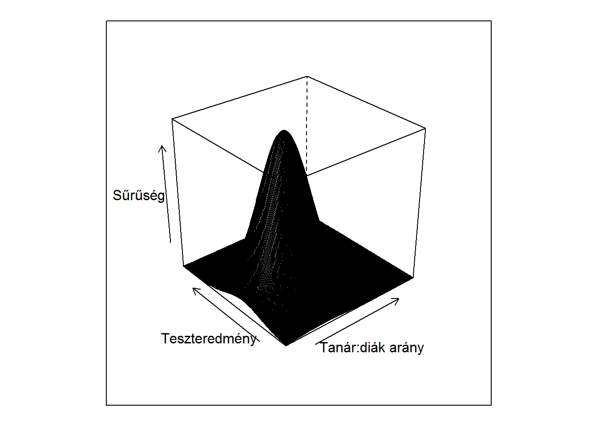
Ez egy kétváltozós eloszlás együttes sűrűségfüggvénye; itt az egyik változó játsza a magyarázó-, a másik az eredményváltozó szerepét. A mintavétel ebből az eloszlásból azt jelenti, hogy kiveszünk egy iskolát (tehát tanár:diák arányt és teszteredményt egyszerre!); ahol magasan fut a sűrűségfüggvény, arról a környékről gyakran veszünk ki, ahol alacsonyan, ott ritkábban. A hiba mibenléte is jól érthető erről az ábráról: ha kiválasztunk egy adott konkrét \(X_1\)-et, ahhoz csak egyetlen \(f\left(X_1\right)\)-et adhatunk, mégis \(Y\) minden értéket felvehet, tehát lehetetlen, hogy ne hibázzunk. (Csak egyetlen egy pont lesz a végtelen sok közül, ahol nem hibázunk.) Persze \(f\left(X_1\right)\)-et majd pont úgy lesz célszerű megválasztani, hogy oda rakjuk, ahol \(Y\) gyakran előfordul, hogy a gyakran előforduló esetekben hibázzunk picit, és csak a ritkábbakban nagyobbat – de erről majd kicsit később.
Elárulom, hogy ez az eloszlás többváltozós normális (később ennek majd jelentősége lesz), \(\boldsymbol{\mu}=\begin{pmatrix} 654 \\ 0.0514 \end{pmatrix}\) várhatóérték-vektorral és \(\mathbf{C}=\begin{pmatrix} 19,\!1^2 & 0,\!23 \cdot 19,\!1 \cdot 0,\!00515 \\ 0,\!23 \cdot 19,\!1 \cdot 0,\!00515 & 0,\!00515^2 \end{pmatrix}\) kovariancia-mátrixszal3.
Sajnos ez az ábrázolás nehezen érzékelhető (pláne, ha nem interaktívan nézzük, és nincs módunk forgatni), jobban járunk, ha így rajzoljuk ki:
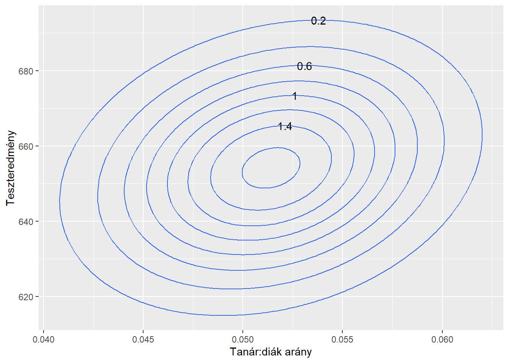
Ez ugyanaz mint a fenti sűrűségfüggvény, de szintvonalakkal
leírva (azaz különböző \(z\) magasságokban elmetszettük a sűrűségfüggvényt és a kapott metszeteket ábrázoltuk). Belátható, hogy többváltozós normális esetén ezek mindig ellipszisek4. Ezt az ábrázolást szokás contour plot
-nak nevezni, előnye, hogy – a háromdimenziós érzékeltetéssel szemben – nem érzékeny a nézőpont megválasztására, részek nem takarnak ki másokat stb. (Ám cserében nyilván információ-vesztéssel jár, ami azzal arányos, hogy milyen sűrűn képezzük a metszeteket.)
Térjünk most vissza az alapkérdésünkre! Úgy vesszük, hogy ez az eloszlás adott, és le akarjuk írni mint \(Y=f\left(\underline{X}\right)+\varepsilon\); de vajon mi \(f\)-re a legjobb választás? Persze egy ilyen kérdést hallva azonnal vissza kell kérdezni: mi a jóság mérőszáma? Hiszen csak ennek ismeretében mondható meg, hogy mi az optimális sokasági regressziófüggvény.
Mivel az \(\varepsilon\) hibát fejez ki, így azzal valószínűleg kevesen vitatkoznának, hogy az a legjobb \(f\), amely mellett a hiba a legkisebb. Igen ám, de mi az, hogy a hiba a legkisebb
? Ez nem olyan nyilvánvaló, ennek megértéséhez beszéljünk egy picit a hibáról. A helyzetet a fenti példán úgy kell elképzelnünk, hogy behúzzuk a \(f\left(X_1\right)\) függvényt; ez olyan mintha rajzolnánk egy görbét az \(X_1-Y\) síkra. Ez után végigmegyünk a sík minden pontján, és megnézzük ott mekkora a hiba: mennyire van távol \(Y\) az \(f\left(X_1\right)\)-től; ez pedig akkora súllyal fog szerepet játszani a hiba eloszlásában, amilyen magasan fut az adott ponton a sűrűségfüggvény. Mindezek természetesen ugyanígy működnek az általános, \(k+1\) dimenziós esetben is.
A hibának tehát egy eloszlása van, így nem egyértelmű, hogy mikor a legkisebb
. Két dolgot kell tennünk, az egyik választás egyértelmű, de a másik már inkább döntés kérdése. Az első, hogy a hiba helyett annak \(\mathbb{E}\varepsilon\) várható értékét tekintjük. Ez jó, mert így a valószínűségi változóból rögtön egy számot kapunk, amire pedig azonnal jobban értjük, hogy mit jelent az, hogy legyen a legkisebb. De igazán azért jó, mert ha összekombináljuk a várható érték fogalmát az előbbi bekezdés végén mondottakkal, akkor látjuk, hogy ez egy nagyon logikus dolgot mond: azt, hogy ott kevésbé számít a hibázás, ahová egyébként is ritkán esünk, és ott számít jobban a hibázás, ami gyakran előfordul!
Azonban még nem végeztük. Ha meggondoljuk, akkor rögtön látjuk, hogy \(\mathbb{E}\varepsilon\) még nem lesz jó: a hiba lehet negatív is és pozitív is, de mi5 nem mondhatjuk azt, hogy ha egyszer 10-zel fölé lőttünk, egyszer meg 10-zel alá, akkor tökéletesek voltunk. Magyarán: meg kell szabadulni az előjeltől. Itt már van választási lehetőségünk, hogy mit teszünk, most döntsünk úgy (és jelen jegyzet túlnyomó többségében ezt adottságnak fogjuk venni), hogy négyzetre emeléssel szabadulunk meg az előjeltől, hiszen a négyzetre emelés függvény tulajdonságai nagyon kellemesek.
Így tehát a megoldandó feladat:
\[ \argmin_f \mathbb{E}\left[Y-f\left(\underline{X}\right)\right]^2 \]
Ez első ránézésre nagyon is ijesztően néz ki: optimalizációs feladat – az összes létező függvény terében?! Mert azt még érti az ember, hogy \(x\) felveszi az összes lehetséges valós számot, és mikor lesz \(f\left(x\right)\) minimális, na de mi az, hogy valami felveszi az összes létező (\(k\)-változós) függvényt…? Hiszen semmi más megkötés nincs a világon, akármilyen \(k\)-változós függvény szóba jöhet, semmit nem mondtunk a függvényformáról, összeadhatjuk a változókat, összeszorozhatjuk, hatványozhatjuk, bármilyen műveletet végezhetünk, bármilyen konstanst belerakhatunk, és az összes ilyen közül mondjuk meg, hogy ez a kifejezés mikor lesz a legkisebb?!
Az érdekes az, hogy bármilyen abszurdan is néz ki, a dolognak van megoldása! Ráadásul a végeredmény nem is túl bonyolult: \(f\) legjobb megválasztása adott pontban \(Y\) feltételes várható értéke lesz az kérdéses pontban:
\[ f_{\text{opt}}\left(\mathbf{x}\right)=\mathbb{E}\left(Y \mid \underline{X}=\mathbf{x}\right) \]
Bizonyítsuk is be ezt! Legyen \(f_{\text{opt}}\) a feltételes várható érték, \(f\) pedig egy tetszőleges \(k\)-változós függvényt. Alakítsuk át a kritériumfüggvényt: \[\begin{align*} \mathbb{E}\left[Y-f\left(\underline{X}\right)\right]^2&=\mathbb{E}\left[Y-f_{\text{opt}}\left(\underline{X}\right)+f_{\text{opt}}\left(\underline{X}\right)-f\left(\underline{X}\right)\right]^2=\\ &=\mathbb{E}\left[Y-f_{\text{opt}}\left(\underline{X}\right)\right]^2+\mathbb{E}\left\{\left[Y-f_{\text{opt}}\left(\underline{X}\right)\right]\left[f_{\text{opt}}\left(\underline{X}\right)-f\left(\underline{X}\right)\right]\right\}+\\ &+\mathbb{E}\left[f_{\text{opt}}\left(\underline{X}\right)-f\left(\underline{X}\right)\right]^2. \end{align*}\] A középső tag szerencsére nulla, ezt toronyszabállyal láthatjuk be: \[\begin{align*} &\mathbb{E}\left\{\left[Y-f_{\text{opt}}\left(\underline{X}\right)\right]\left[f_{\text{opt}}\left(\underline{X}\right)-f\left(\underline{X}\right)\right]\right\}=\\ &=\mathbb{E}\left\{\mathbb{E}\left\{\left[Y-f_{\text{opt}}\left(\underline{X}\right)\right]\left[f_{\text{opt}}\left(\underline{X}\right)-f\left(\underline{X}\right)\right] \right\} \mid \underline{X} \right\}=\\ &=\mathbb{E}\left\{\left[f_{\text{opt}}\left(\underline{X}\right)-f_{\text{opt}}\left(\underline{X}\right)\right]\mathbb{E}\left[f_{\text{opt}}\left(\underline{X}\right)-f\left(\underline{X}\right)\right] \mid \underline{X} \right\}=0, \end{align*}\] így azt kaptuk, hogy \[ \mathbb{E}\left[Y-f\left(\underline{X}\right)\right]^2=\mathbb{E}\left[Y-f_{\text{opt}}\left(\underline{X}\right)\right]^2+\mathbb{E}\left[f_{\text{opt}}\left(\underline{X}\right)-f\left(\underline{X}\right)\right]^2, \] amiből már csakugyan látható, hogy \(f_{\text{opt}}\) a legjobb választás, hiszen az első tagra nincsen ráhatásunk (mi ugye \(f\)-et állítjuk), a második tag pedig egy négyzet várható értéke, így \(0\)-nál kisebb nem lehet, de az csakugyan elérhető, ha \(f\)-nek \(f_{\text{opt}}\)-ot választjuk.
Látható tehát, hogy ez az eredmény teljesen univerzális, semmit nem tételeztünk fel \(f\)-ről!
Talán nem felesleges feleleveníteni ezen a pontok a feltételes várható érték fogalmát.
A kiindulópont a feltételes eloszlás, amit úgy kapunk, hogy fogjuk az együttes eloszlást, és egy adott ponton (ami a feltétel) átmetszük. Mondjuk legyen a feltétel az, hogy \(X_1=0,\!055\):

Az együttes sűrűségfüggvény, ne feledjük, egy hegy (aminek a szintvonalait mutatja az ábra), tehát arról van szó, hogy fogunk egy nagy kést, és a piros vonal mentén végigvágjuk a hegyet. Így ezt kapjuk:
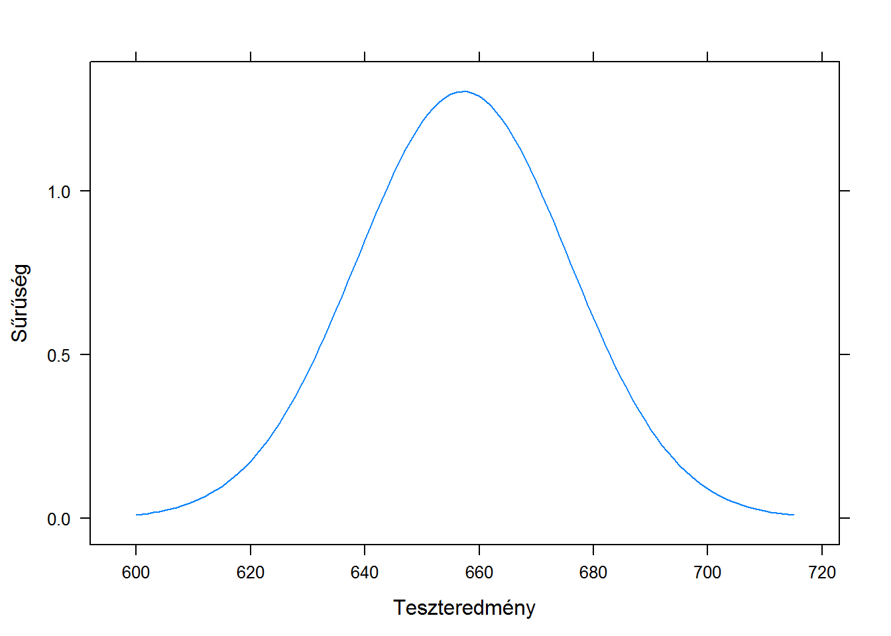
Vigyázat, ez még nem sűrűségfüggvény, hiszen nem 1 a görbe alatti területe! De már majdnem megvagyunk, nincs más feladatunk, mint átnormálni (elosztani alkalmas konstanssal), hogy 1 legyen a görbe alatti terület, ez az alkalmas konstans persze a jelenlegi görbe alatti területe lesz, ami nem más, mint a vetületi eloszlás értéke a feltétel pontjában. Elvégezve ezt kapjuk a feltételes eloszlást:
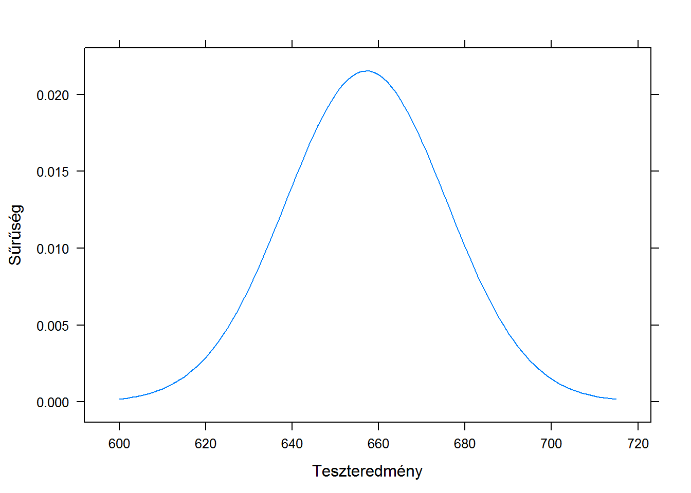
A feltételes várható érték nem más, mint a feltételes eloszlás várható érték – tehát ennek a fenti függvénynek a várható érték. Bejelölve rajta:
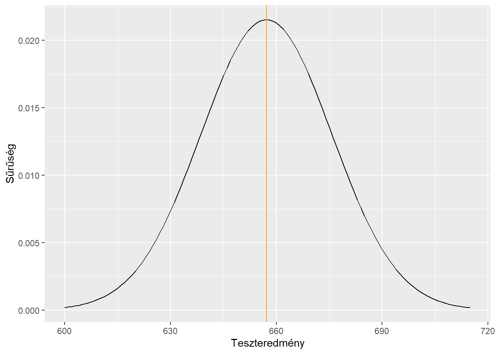
A feltételes várható érték tehát nagyjából 657, és ne feledjük, ez ahhoz a feltételhez tartozik, hogy a tanár:diák arány értéke 0,055. Ahogy az előbb megállapítottuk: ha valaki azt kérdezi, hogy ekkora tanár:diák arány mellett mi a legjobb tippünk a teszteredményre, akkor válaszoljunk 657-et! Ezzel is hibázhatunk persze, de így is ekkor járunk a legjobban (elfogadva persze, hogy négyzetes hibázást minimalizálunk).
Jelöljük is be ezt az értéket az eredeti ábránkon:
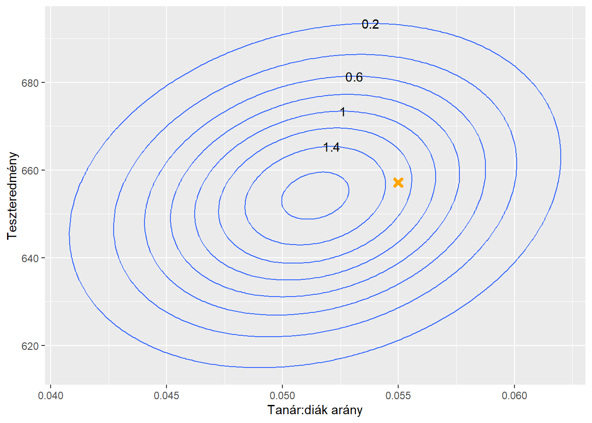
Így ni: ha 0,055-ben kérdeznek meg minket, akkor ez a legjobb tippünk.
De az ember itt már vérszemet kap: vajon mi történik, ha kiszámoljuk az összes többi pontban is, hogy mi a legjobb tippünk, tehát a feltételes várhatóértéket?! Íme:
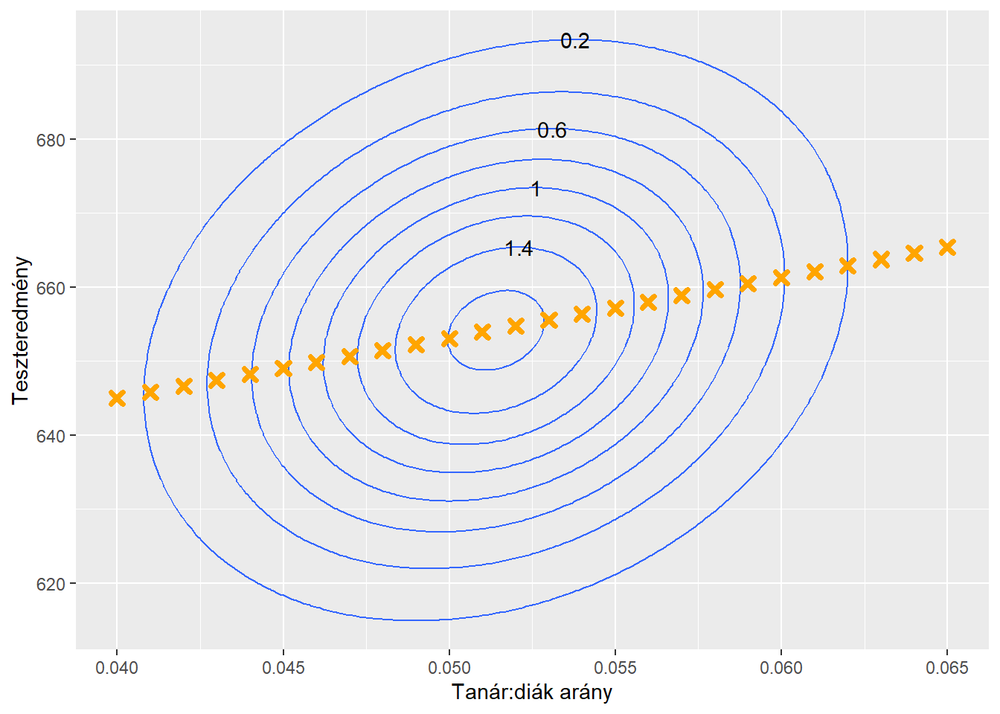
Nem lehet nem észrevenni: ezek mind egy egyenesre6 illeszkednek! A dolog természetesen nem véletlen, és azért van így, mert az eloszlás többváltozós normális volt. Ez esetben az optimális sokasági regressziófüggvény csakugyan mindig lineáris, ez tételként kimondható7: ha \(Y\) és \(\underline{X}\) együttes eloszlása normális8, akkor
\[ \mathbb{E}\left(Y \mid \underline{X}\right)=\mathbb{E}Y+\mathbf{C}_{Y\underline{X}}\mathbf{C}_{\underline{X}\underline{X}}^{-1}\left(\underline{X}-\mathbb{E}\underline{X}\right). \]
Egy pillanatra álljunk meg. Eddig feltételes eloszlást csak úgy írtunk, hogy a feltétel az egy konkrét érték (szám vagy vektor) volt: \(\mathbb{E}\left(Y \mid \underline{X}=\mathbf{x}\right)\). De itt valami más szerepel! A magyarázathoz elevenítsünk fel egy valszám definíciót: a \(\mathbb{E}\left(Y \mid \underline{X}=\mathbf{x}\right)\) egy \(h\) transzformációt definiál (hiszen adott \(\mathbf{x}\)-hez hozzárendel egy valós számot), és \(\mathbb{E}\left(Y \mid \underline{X}\right)\) alatt \(h\left(\underline{X}\right)\)-et értjük. Tehát van értelme az \(\mathbb{E}\left(Y \mid \underline{X}\right)\) objektumnak is, és ez egy valószínűségi változó lesz. Számunkra ebből annyi fontos, hogy ha \(\mathbb{E}\left(Y \mid \underline{X}\right)\)-t látunk, azt értsük úgy, mint valami, ami minden \(\mathbf{x}\) esetén működik, bármikor beírható, hogy így \(\mathbb{E}\left(Y \mid \underline{X}=\mathbf{x}\right)\) legyen belőle. Természetesen ez fontos, hogy ha egy egyenletben szerepel, akkor ezt az átírást mindenhol megtegyük, pl. írhatjuk, hogy \(\mathbb{E}\left(Y \mid \underline{X}=\mathbf{x}\right)=\mathbb{E}Y+\mathbf{C}_{Y\underline{X}}\mathbf{C}_{\underline{X}\underline{X}}^{-1}\left(\underline{X}-\mathbf{x}\right)\) (hiszen \(\mathbf{x}\) várható értéke saját maga). Ez a jelölés tehát egyfajta általánosítás.
Visszatérve, írhatjuk, hogy \[ \mathbb{E}\left(Y \mid \underline{X}\right)=\beta_0 + \beta_1 X_1 + \beta_2 X_2 + \ldots + \beta_k X_k. \] ha bevezetjük a \[ \beta_0=\mathbb{E}Y-\mathbf{C}_{Y\underline{X}}\mathbf{C}_{\underline{X}\underline{X}}^{-1}\mathbb{E}\underline{X} \] és a \[ \begin{pmatrix}\beta_1&\beta_2& \cdots & \beta_k\end{pmatrix}^T=\mathbf{C}_{Y\underline{X}}\mathbf{C}_{\underline{X}\underline{X}}^{-1}\underline{X} \] jelöléseket.
Az adatok igazából nem osztály-szintűek, hanem körzetenkénti átlagok, de ez minket, a mostani kérdésünk szempontjából nem érint, így a továbbiakban az egyszerűség kedvéért osztályt fogok mondani.↩
Pedig még össze sem foglaltam a fentieket úgy, hogy a korreláció nem implikál kauzalitást!↩
Egyszerűen úgy választottam a paramétereket, hogy megfeleljen a kalifornaiai példának↩
Úgy, hogy az ellipszis középpontját a várhatóérték-vektor adja meg, a tengelyek a kovariancia-mátrix sajátvektorainak irányába mutatnak, féltengelyeik hossza pedig a kovariancia-mátrix megfelelő sajátértékeivel arányos.↩
A statisztikusokról szóló viccekkel szemben.↩
Érdemes megfigyelni (ez kétváltozós esetben jó szemmértékkel még érzékelhető vizuálisan is), hogy a regressziófüggvény nem az ellipszisek nagytengelye – tehát a korrelációs mátrix megfelelő sajátvektora – irányába mutat! Hanem az ellipszis
vízszintesen szélső
pontjain megy át.)↩A bizonyítást itt elhagyom, lásd például: Bolla-Krámli: Statisztikai következtetések elmélete. Typotex, 2005. 207-208.oldal.↩
Jelölje \(\mathbf{C}_{\underline{X}\underline{X}}\) az \(X\)-ek szokásos kovarianciamátrixát, \(\mathbf{C}_{Y\underline{X}}\) pedig azt az oszlopvektort, amely sorban az összes \(X\) kovarianciáját tartalmazza \(Y\)-nal.↩